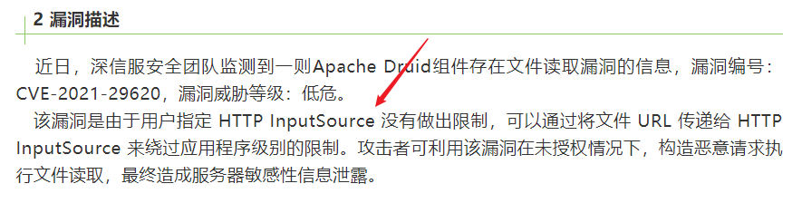
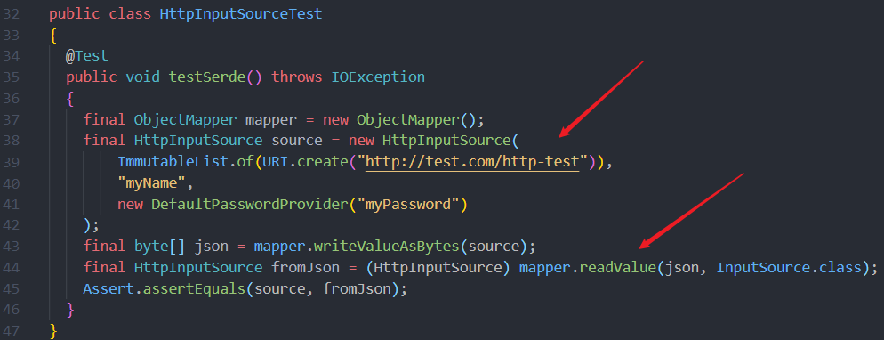
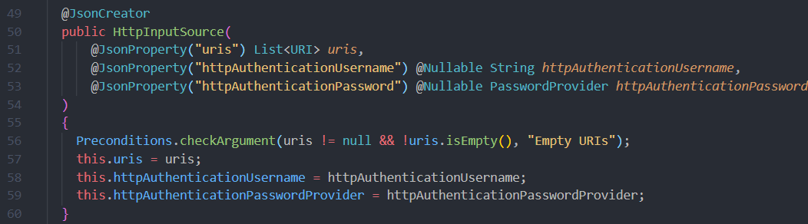
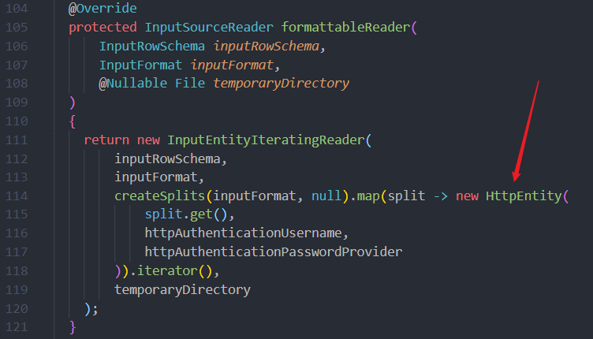
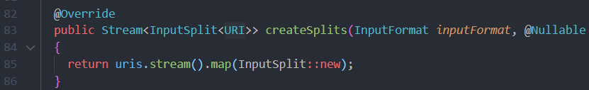
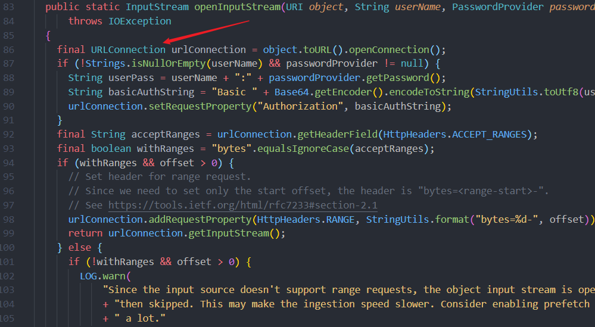
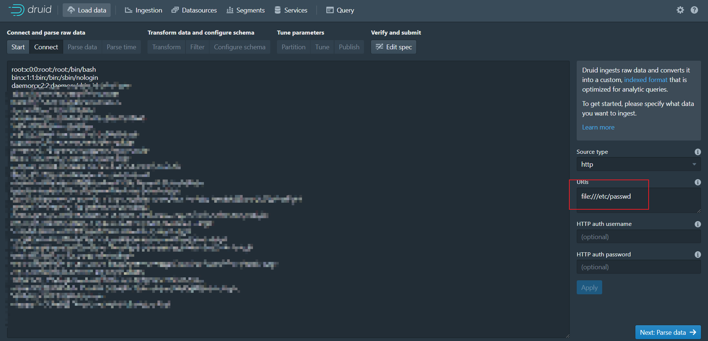

【漏洞复现】Apache Druid 文件读取漏洞 (CVE-2021-26920)
1 前言
【漏洞通告】Apache Druid 文件读取漏洞 CVE-2021-26920
2 漏洞分析
下载 druid-0.20.2 的源码
漏洞通告中已经说明了漏洞在 HTTP InputSource 中

找到 HttpInputSourceTest 类，可以看出 HttpInputSource 类是通过构造方法传入 URL，然后通过 mapper.readValue() 获取返回值

查看 HttpInputSource 类的构造方法，这里只是单纯的将 URL 赋值，没有进行操作

formattableReader 中调用了 HttpEntity 类，并且传入了 uris

uris 在
creareSplits方法中出现

跟踪到 HttpEntity 类，这里调用了 URLConnection 对 URL 发起请求，并且没有任何过滤，所以可以用 file 协议对文件进行读取

3 漏洞验证
3.1 环境搭建
参考之前写的博客
【漏洞复现】Apache Druid 远程代码执行漏洞 (CVE-2021-26919)
3.2 漏洞触发
访问 http://192.168.182.134:8888/
选择 Load data → HTTP(s)
在 URL 处输入 file:///etc/passwd，然后提交，成功读取到文件
